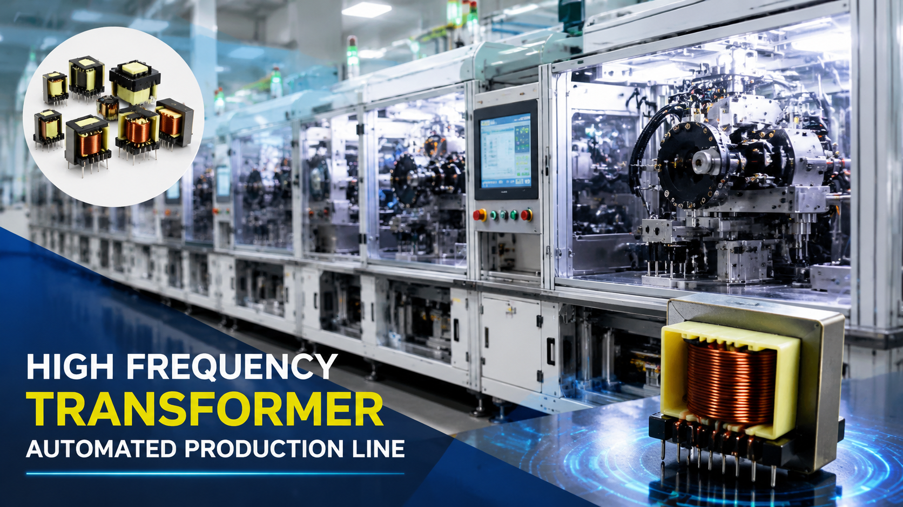

High Frequency Transformer Automated Production Line | Multi-Axis Smart Manufacturing Solution

Summary
As global demand for EV chargers, renewable energy systems, industrial power supplies, and energy storage continues to grow, manufacturers are facing increasing pressure to produce high-frequency transformers with higher precision, greater consistency, and lower labor costs.
This automated production line integrates multi-axis winding technology, intelligent assembly, automated soldering, electrical testing, and quality inspection into one continuous manufacturing process.
Designed for large-scale transformer production, the solution enables manufacturers to increase output, improve product consistency, reduce labor dependency, and build a modern smart factory for the next generation of power electronics.
Technology
- Multi-Axis Automatic Winding Machine
- Automatic Material Feeding System
- Wire Cutting & Terminal Processing
- Automatic Core Assembly
- Precision Soldering System
- Intelligent Dispensing System
- Electrical Testing Equipment
- Vision Inspection System
- Automatic Sorting & Packaging
- Manufacturing Execution Integration (Optional)
Challenge
As demand for power electronics continues to increase, traditional transformer manufacturing faces several production challenges:
→ Labor-intensive winding and assembly processes
→ Difficulty maintaining winding precision and product consistency
→ Limited production capacity
→ High defect rates caused by manual operations
→ Increasing labor costs and workforce shortages
→ Difficult production scheduling and quality traceability
Manufacturers need a scalable automation solution capable of supporting high-volume production while maintaining consistent product quality.
Solution
Our High Frequency Transformer Automated Production Line combines advanced multi-axis winding technology with intelligent production automation to create a highly efficient manufacturing system.
The complete solution integrates material feeding, winding, assembly, soldering, dispensing, testing, inspection, and packaging into one continuous workflow.
Designed for flexible manufacturing, the production line supports multiple transformer models with fast product changeovers while significantly reducing manual intervention.
Whether upgrading an existing production facility or building a new transformer factory, this solution helps manufacturers establish reliable, scalable, and intelligent production capabilities.
Workflow & Layout
Raw Material Loading
↓
Automatic Material Feeding
↓
Multi-Axis Automatic Winding
↓
Wire Cutting & Terminal Processing
↓
Core Assembly
↓
Automatic Soldering
↓
Glue Dispensing
↓
Electrical Testing
↓
Vision Inspection
↓
Automatic Sorting
↓
Packaging
Results & ROI
- Manufacturers typically achieve:
- √ Production efficiency increased by 2–5 times compared with manual production
- √ Significant reduction in labor requirements
- √ Stable winding accuracy and product consistency
- √ Lower defect and rework rates
- √ Higher equipment utilization
- √ Faster delivery for high-volume orders
- √ Improved production traceability
- √ Better return on automation investment through continuous operation
- Actual performance depends on product type
- production volume
- and factory layout.
Equipment List
- The complete solution may include:
- 📌 Automatic Material Feeding System
- 📌 Multi-Axis Transformer Winding Machine
- 📌 Wire Cutting Machine
- 📌 Terminal Processing Machine
- 📌 Automatic Core Assembly Station
- 📌 Precision Soldering System
- 📌 Glue Dispensing Machine
- 📌 Electrical Testing System
- 📌 AOI Vision Inspection System
- 📌 Laser Marking System (Optional)
- 📌 Automatic Sorting System
- 📌 Packaging System
- 📌 Conveyor & Transfer System
- 📌 MES/WMS Integration (Optional)
Project Overview / Opening
High frequency transformers are essential components used in electric vehicles, renewable energy systems, industrial power supplies, communication equipment, AI servers, and energy storage applications.
As electronic products become more compact and power densities continue to increase, manufacturers require automated production systems capable of delivering higher precision, greater consistency, and scalable production capacity.
This project demonstrates a complete high-frequency transformer manufacturing solution built around multi-axis winding technology and intelligent production automation, helping manufacturers modernize their factories while improving efficiency and product quality.
Key Points
- 📌 Fully automated transformer production workflow
- 📌 Multi-axis high-speed winding technology
- 📌 Continuous production with minimal manual intervention
- 📌 High precision and consistent product quality
- 📌 Flexible manufacturing for multiple transformer models
- 📌 Intelligent inspection and quality control
- 📌 Scalable production capacity for growing market demand
- 📌 Ready for smart factory integration
Implementation / Workflow
The production process begins with automatic material feeding, where transformer cores and winding materials are prepared for continuous manufacturing.
High-speed multi-axis winding machines precisely control wire tension, winding layers, and positioning to ensure stable electrical performance.
After winding, transformers move automatically through core assembly, soldering, glue dispensing, electrical testing, and visual inspection stations.
Qualified products are automatically sorted, marked if required, and transferred to the packaging area, creating a highly efficient end-to-end manufacturing workflow with complete production traceability.
Customer Value / Results
This solution is particularly suitable for manufacturers producing:
√ High Frequency Transformers
√ EV Charger Transformers
√ Switching Power Supplies
√ Solar Inverter Components
√ Energy Storage Systems (ESS)
√ Industrial Power Electronics
√ Communication Equipment
√ AI Server Power Modules
Key business benefits include:
√ Lower manufacturing costs
√ Reduced labor dependency
√ Improved production consistency
√ Higher factory utilization
√ Faster product delivery
√ Flexible production expansion
√ Increased manufacturing competitiveness
√ Long-term support for smart factory transformation
Conclusion / Next Step
As demand for high-frequency transformers continues to grow across electric vehicles, renewable energy, industrial electronics, and energy storage industries, factory automation has become a key driver of manufacturing competitiveness.
We help manufacturers worldwide design, source, integrate, and deliver complete industrial automation projects by leveraging China's manufacturing ecosystem. Whether you need a fully automated transformer production line, individual manufacturing workstations, or a customized smart factory solution, our team can support your project from concept and equipment selection to system integration and delivery.
Ready to upgrade your transformer manufacturing capabilities? Visit our Contact page to discuss your project requirements, request a preliminary production line proposal, or receive a customized automation solution tailored to your factory.
SEO Title
High Frequency Transformer Automated Production Line | Multi-Axis Smart Manufacturing Solution
SEO Description
As global demand for EV chargers, renewable energy systems, industrial power supplies, and energy storage continues to grow, manufacturers are facing increasing pressure to produce high-frequency transformers with higher precision, greater consistency, and lower labor costs.
This automated production line integrates multi-axis winding technology, intelligent assembly, automated soldering, electrical testing, and quality inspection into one continuous manufacturing process.
Designed for large-scale transformer production, the solution enables manufacturers to increase output, improve product consistency, reduce labor dependency, and build a modern smart factory for the next generation of power electronics.
Related Blog
Start with Your Business Challenge
Tell us about your warehouse, factory, or production requirements. We'll help you explore practical automation solutions and relevant project references.